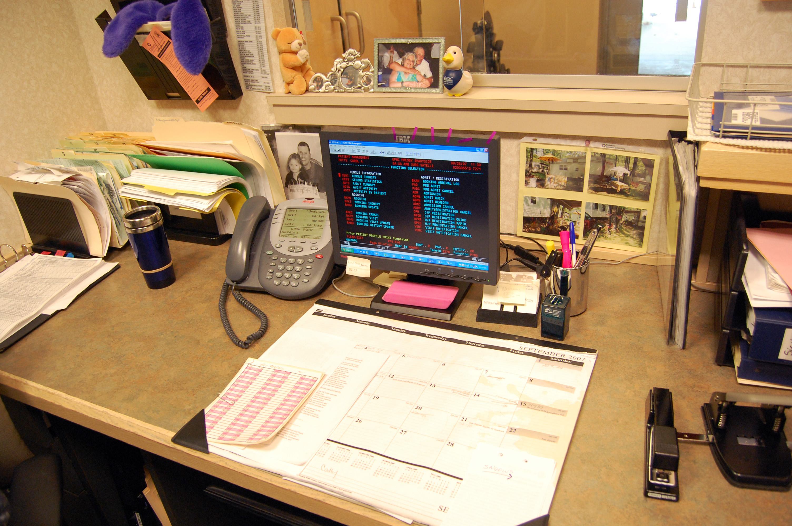
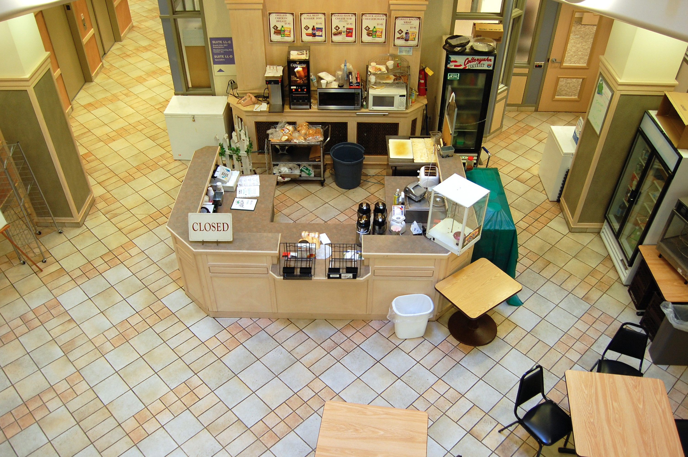
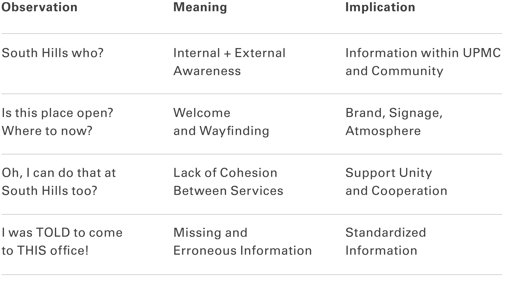
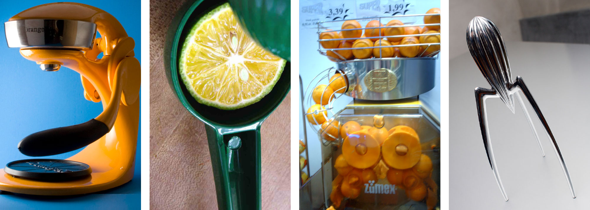
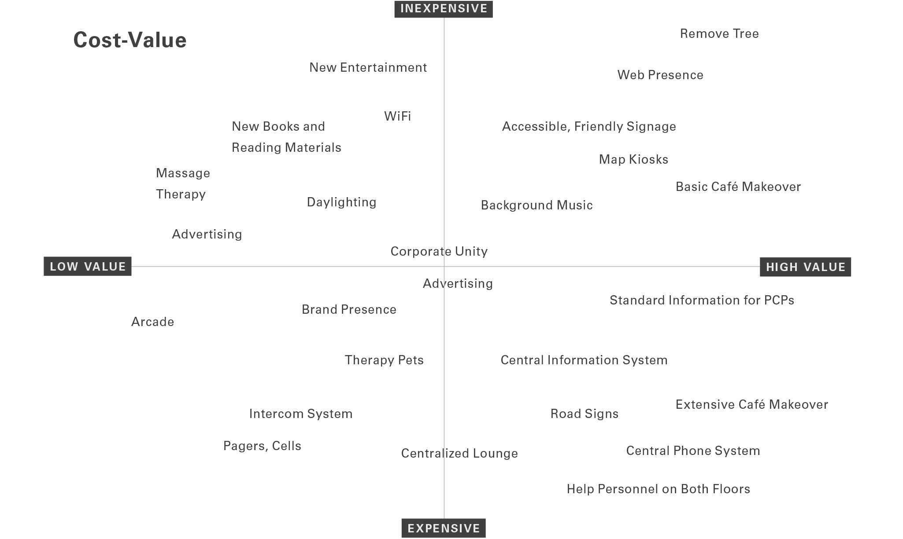
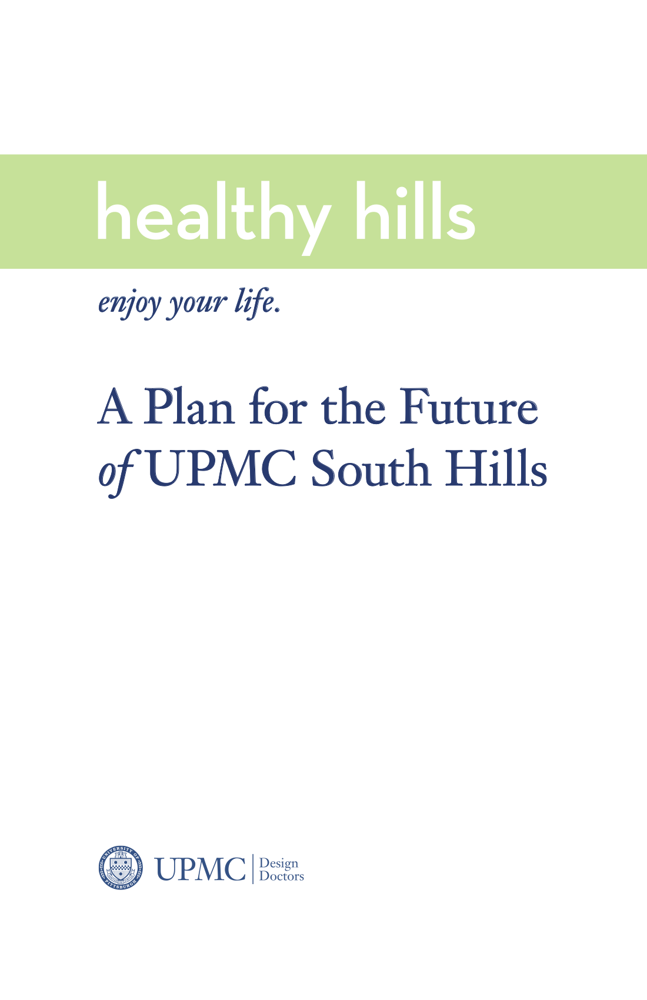
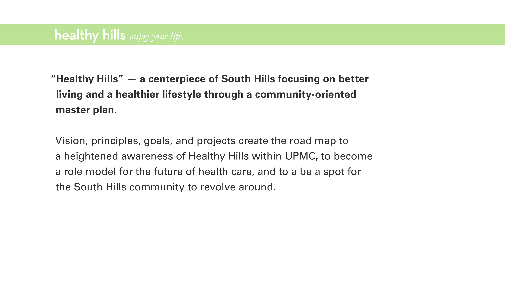
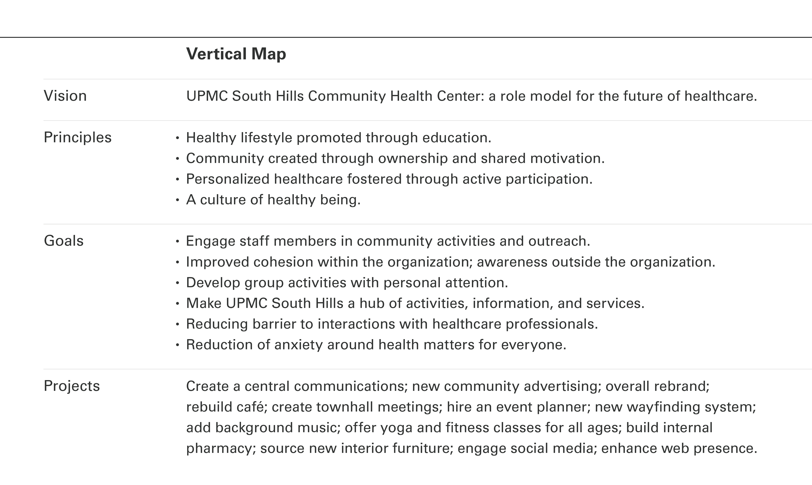
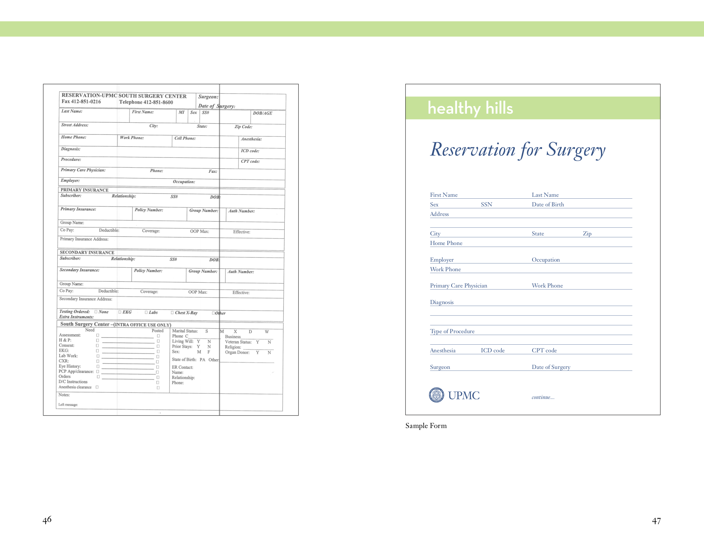
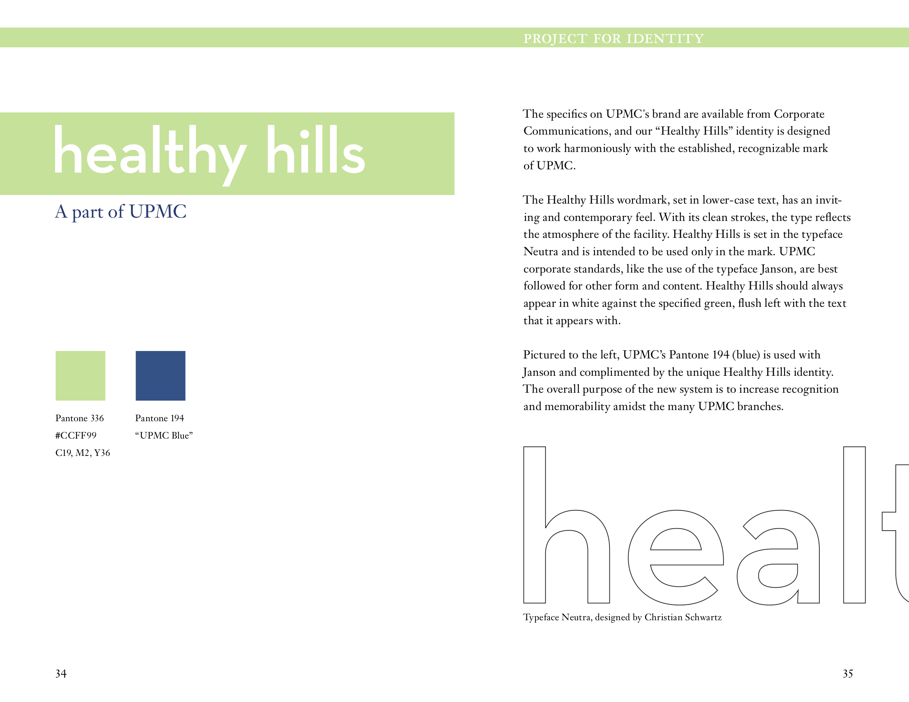

Connecting patient experience with strategy.
A four-week research engagement at an outpatient surgery center became a strategy engagement for the system. The deliverable wasn’t furniture. It was a vertical map that turned mission, vision, and values into something leadership could operate.
UPMC South Hills sits eight miles south of Pittsburgh, in a middle-class suburb with an aging population. We were brought in to study patient experience inside a 120,000 sq ft outpatient facility. Halfway through the engagement, the corporate steering committee asked us to extend the work into a model for the future of UPMC’s satellite network nationwide. The pivot from research to strategy is the project.
A patient-experience brief with strategy hiding inside it.
UPMC’s network was expanding regionally — opening and acquiring clinics and hospitals across western Pennsylvania. South Hills was a 120,000 sq ft three-story facility with more than a dozen outpatient practices, a central atrium, a surgery center, primary care, cardiology. An obvious candidate for a model satellite. Except half the people in Bethel Park couldn’t find it, and a plurality of survey respondents confused it with the competitor across the street.
This wasn’t a UX brief on a website. It was infrastructure work for the system’s next decade, and whatever came out of it would propagate across UPMC’s other satellite facilities.
Patient satisfaction surveys had been running for years and never acted on. They told a story of broad satisfaction. Once we got into the field the story didn’t match.
Layered methods, until the system showed itself.
The work pulled in just about every method we had. An ethnographic facility tour and photo documentation across every back-office, every waiting area, every storage closet. Patient and family shadowing through full visits. Surveys at the patient, check-in, and staff levels. A technology audit at the front desks and clinical workstations. Unstructured interviews with patients, families, and staff. Patient diaries. OMI charts — observation, meaning, implication — for synthesis. Journey maps and service blueprints. Co-creation workshops with sticker-blueprint and drawing prompts. And, when scope expanded, far-future remapping with image-card prompts and linguistic analysis on top of it.
A representative shadow.
We met Barry and Deborah Hume on the morning of his knee replacement. The nursing staff waits for surgery patients at a dedicated entrance they call “the celebrity entrance.” Barry’s surgery went well. He was discharged at 5 PM. Three days later, the Humes brought a birthday cake for the nurse who took care of them.
That kind of moment was common. Patients reported high satisfaction. Internal surveys reflected the same. If our research had stopped at the analytical layer, the answer would have been “everything’s working.”

Findings — thirteen issues at the level of the system.
- Siloed practices; few staff knew the full breadth of services offered at South Hills.
- Patients were referred outside the building for needs that could be met down the hall.
- Few staff understood corporate’s direction; the satellite was disconnected from the system.
- A clean, bright space with the atmosphere of a dead mall.
- Wayfinding was hard for first-time visitors and elderly patients.
- The central café was closed most of the time; the space felt clinical.
- Long waits with little for family members to do.
- Information flow between offices was hindered by old tools.
- Patients were sent to the wrong office because of missing information and bad signage.
- The digital footprint lacked clear listings of services and hours; no brand cohesion across UPMC properties.
- Finding the building was hard.
- Little name recognition in Bethel Park or surrounding towns.
- A plurality of survey respondents confused South Hills with a competitor across the street.


Far-future research, after the obvious method failed.
The corporate steering committee extended the brief: South Hills should become a model for UPMC satellites nationwide. We needed input on what “the future” should mean to the community. So we tried the obvious thing first.
We tried direct future visioning at a nearby mall on a Tuesday morning. Bought coffee for mall-walkers, talked with employees, recorded their stories. Asking “what does the future of healthcare look like to you?” produced almost nothing. People can talk about iterative change. Far-future change requires different prompts.
Far-future remapping.
We switched to image-card prompts. Four cards per question — “if healthcare in the future were one of these juicers, magazines, vacation spots, or cars, which would it be and why?” The choice wasn’t the data. The justification was.

— Bethel Park resident, future-of-healthcare remap
Hundreds of justifications. Linguistic analysis surfaced a vocabulary of comfort, accessibility, brightness, efficiency, happiness, peace, individuality, immediacy, and simplicity. From that vocabulary we constructed a map that connected the system’s aspirations to the things its workers could actually do on a Tuesday.
Cheap experiments first, then a vertical map.
Cycle 01 — Direct vectors on the building.
Some problems have direct vectors. We ran low-fidelity experiments on the building itself: a warmer café, calmer waiting rooms, ad-hoc “breather” spaces with quieter music, simpler intake forms, better wayfinding. We collected feedback through diaries, sticker-blueprints, and co-creation drawings — fast, immediate, cheap to revise. The cost-value matrix below sequenced what to try first.

Design decision — stop moving furniture.
Once the steering committee scope hit, we stopped iterating on the building. Visioning at the system level can’t be built up from prototypes; it has to be designed down from a vision.
Cycle 02 — Vertical map authorship.
Vision at the top, principles below it, goals below those, projects at the bottom. Each row laddered up to the row above. The structural promise of the map was that the projects at the bottom — the things people actually do on a Tuesday — would be measurable and assignable, while still anchored to a vision the leadership could defend in a board meeting.
Things that almost broke the project.
The satisfaction scores running counter to observation was the early one. Layering methods was the answer; no single method would have surfaced the system-level issues. The blueprint plus the shadow plus the OMI plus the linguistic remap, taken together, painted a picture leadership couldn’t argue with.
Direct future visioning was the second. It just didn’t work — the mall on a Tuesday morning produced almost nothing. Switching to image-card remapping unlocked it. Treating the choice as irrelevant and the justification as the data was the move.
And then the scope expanded mid-engagement, which is the kind of thing that derails a research project at the pricing meeting. We adapted the methods rather than re-scoping, and built the vertical map specifically so it could absorb both phases of work.
A workbook leadership could operate from.
The deliverable was a comprehensive strategy workbook: research insights, prototype results, the vision-to-action map, project candidates with cost-benefit, a sequenced roadmap. Goals and projects were sized so each could be assigned a budget, an owner, a timeline, and a KPI. The workbook’s job was to outlast our engagement.
Inside the workbook, the centerpiece was the vertical map — vision down to principles down to goals down to projects, the framework that turns mission/vision/values into something a budget cycle can act on. Around it: an outpatient surgery service blueprint aligning evidence, patient actions, on-stage and back-stage contact across the full visit timeline; a Healthy Hills brand identity (typeface, color, voice, retail-ready signage) giving the satellite a name people could find; high-volume form redesigns (the reservation-for-surgery being the big one) re-set for legibility and fewer errors; and a project portfolio sized for budget assignment.






A framework that outlasted the engagement.
The vertical map went out as the operational strategy workbook UPMC could budget against. The Healthy Hills brand identity rolled out as the satellite-facility-of-the-future direction. And the framework, once we’d built it, kept showing up in other engagements — multiple visions under a company-wide vision; strategic plans inserted between principles and goals; workstreams added at the bottom for the teams who execute. The artifact has had a longer working life than the engagement that produced it.
A few things I took with me.
Layering methods is the cheapest insurance against satisfaction-survey blindness. A single-method research project on this engagement would have produced a different answer, and the wrong one. The juicer card isn’t a clever trick — it’s the only thing that worked when we asked people to imagine far futures. The choice doesn’t matter. The justification is the data.
And: a vertical map that’s pretty but not budgetable is a poster. Strategy artifacts only work if leadership can operate them.
What I’d do differently.
I’d push harder, earlier, for the strategic scope. The “patient experience” framing was already too narrow on day one. Leadership knew it. We surfaced it through the work. In retrospect we could have surfaced it in the kickoff. Now I spend that scope-question energy in week one instead of week eight.
Patients loved the people. The system around the people was failing them. Strategy was the right scope. Furniture was not.